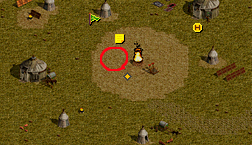
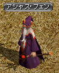
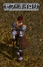
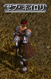
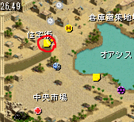
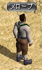
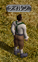
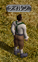

（３０，３５）
風の羽推奨。
ロマ村に飛ぶとよい。
風の羽を使わない場合は、
ファストポータル
ソゴム山脈赤山
飛んだ先から左上に進み、ロマ村へ。
アシャス・フェンは町の中央にある炎のすぐ左にいる。
 
１次転生クエ同様、一度受けるとキャンセル不可なので注意。
聞く
（８５，１９２）
ミラーテレポータの前を記憶１推奨。
ミラーテレポータ（古都冒険者協会のロビーにいる）
１１１５１０ ←最後の数字は１ではなく１０なので注意！
で、該当マップに飛び、そこから走りで。
ゼブ・ネイロリは、湖の左下付近（８５，１９２）にいる。
何度か来るため、
ゼブ・ネイロリの前を記憶２推奨。
 
改善する方法を聞く
（２６，４９）
記憶１を使ってミラーテレポータへ戻る。
左へ進んで一般クエスト担当へ。
一般クエスト担当（古都冒険家協会・クエスト案内にいる）
１１９２１（失われた苗木）
で、飛んだ所の少し下。
メロープはアリアン銀行から少し左下付近（２６，４９）にいる。
 
会話の途中で３つの選択肢が登場、分岐する。
１）環境改善による方法 → ラカリフサへおつかい
２）薬品による改善方法 → MOB倒す＆ハノブ、アウグへのお使い
３）魔法による改善方法 → スマグへおつかい（10万G必要）
内容を見て、楽と思うものを選ぶとよいだろう。
個人的には ３）魔法による改善方法 がおすすめ。
◆一般クエスト担当に関する注意◆
この一般クエスト担当を使う移動方法は、
該当のクエストを終わらせていると使えないので注意。
以降も同様。
 
